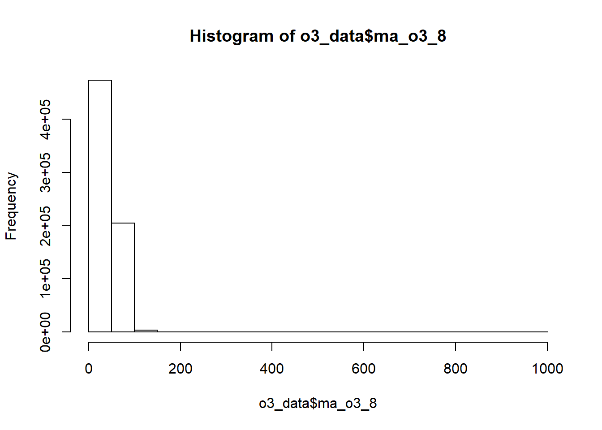

6 Gathering and Cleaning Data
6.1 Data gathering
Loading packages
library(readr)
library(dplyr)
library(tidyr)
library(purrr)
library(lubridate)
library(ggplot2)
library(stringr)
library(knitr)
library(xts)
library(zoo)
library(gridExtra)
library(fpp2)
library(RcppRoll)
library(kableExtra)
options(knitr.table.format = "html")First of all I have to check if I will have the basic data to make the analysis. I need air pollution and weather data of the Gijon area. The town hall of Gijon has an open data web portal here https://transparencia.gijon.es/. We can download pollution air data on csv format from year 2000 to 2017 here:
I downloaded 18 csv files with air pollution and weather data of Gijon from years 2000 to 2017. I saved them in the “data” folder. I downloaded two more files from this web, a csv file with the description of the variables and another csv file with information about the measurement stations.
We take a look to the information included in the stations_info.csv file. It includes the stations addresses, longitude, latitude and their IDs and names. All this information, as we will see, is included in the csv files with pollution and weather data too. So, we are not going to use this file anymore.
stations <- read_delim('data/stations_info.csv',
delim = ';',
escape_double = FALSE,
trim_ws = TRUE,
locale = locale(encoding = "ISO-8859-1"),
col_types = cols(.default = "c"))
stations## # A tibble: 6 x 6
## `"ID;""Título""` `""Dirección""` `""Población""` `""Provincia""`
## <chr> <chr> <chr> <chr>
## 1 "\"1;\"\"Consti~ "\"\"Avda. Con~ "\"\"Gijón\"\"" "\"\"Asturias\~
## 2 "\"2;\"\"Argent~ "\"\"Avda. Arg~ "\"\"Gijón\"\"" "\"\"Asturias\~
## 3 "\"3;\"\"H. Fel~ "\"\"H. Felgue~ "\"\"Gijón\"\"" "\"\"Asturias\~
## 4 "\"4;\"\"Castil~ "\"\"Plaza Cas~ "\"\"Gijón\"\"" "\"\"Asturias\~
## 5 "\"10;\"\"Monte~ "\"\"Montevil\~ "\"\"Gijón\"\"" "\"\"Asturias\~
## 6 "\"11;\"\"Santa~ "\"\"Santa Bár~ "\"\"Gijón\"\"" "\"\"Asturias\~
## # ... with 2 more variables: `""latitud""` <chr>, `""longitud""",,` <chr>We can see on this image the location of each station. http://movil.asturias.es/medioambiente/articulos/ficheros/Informe%20de%20calidad%20del%20aire%20en%20Asturias%202016.pdf

Image source: “Informe de calidad del aire del Principado de Asturias (2016)”.
The air_data_descriptors.csv file contains information about the nature of the elements monitored by the stations. Names, descriptions and units.
variables <- read_csv('data/air_data_descriptors.csv', locale = locale(encoding = "ISO-8859-1"))
variables## # A tibble: 17 x 4
## Parametro `Descripción Parámetro` TAG Unidad
## <chr> <chr> <chr> <chr>
## 1 BEN Benceno BEN µg/m³
## 2 CO Concentracion de CO CO mg/m³
## 3 DD Direccion del viento DD Grados
## 4 HR Humedad relativa HR %hr
## 5 LL Precipitacion LL l/m²
## 6 MXIL MXileno MXIL µg/m³
## 7 NO Concentracion de NO NO µg/m³
## 8 NO2 Concentracion de NO2 NO2 µg/m³
## 9 O3 Concentracion de Ozono O3 µg/m³
## 10 PM10 Particulas en suspension <10 µg/m³ PM10 µg/m³
## 11 PM25 Particulas en Suspension PM 2,5 PM25 µg/m³
## 12 PRB Presion Atmosferica PRB mb
## 13 RS Radiacion Solar RS W/m²
## 14 SO2 Concentracion de SO2 SO2 µg/m³
## 15 TMP Temperatura Seca TMP ºC
## 16 TOL Tolueno TOL µg/m³
## 17 VV Velocidad del viento VV m/sIn order to import the data from the 18 csv files we list all the files in the object data_files.
data_files <- list.files(path = "data", pattern = "air_data_20*")Then, we map the function read_csv on this list in order to import every file and finally merge them in a unique dataframe (air_data_0) with reduce(rbind).
air_data_0 <- data_files %>%
map(function(x) {
read_csv(paste0("./data/", x), locale = locale(encoding = "ISO-8859-1"), col_types = cols(.default = "c"))
}) %>%
reduce(rbind)We take a look to the dataset
glimpse(air_data_0)## Observations: 722,774
## Variables: 22
## $ Estación <chr> "1", "1", "1", "1", "1", "1", "1", "1", "1...
## $ Título <chr> "Estación Avenida Constitución", "Estación...
## $ latitud <chr> "43.529806", "43.529806", "43.529806", "43...
## $ longitud <chr> "-5.673428", "-5.673428", "-5.673428", "-5...
## $ `Fecha Solar (UTC)` <chr> "2000-01-01T00:00:00", "2000-01-01T01:00:0...
## $ SO2 <chr> "23", "29", "40", "50", "39", "39", "40", ...
## $ NO <chr> "89", "73", "53", "46", "35", "26", "27", ...
## $ NO2 <chr> "65", "60", "57", "53", "50", "49", "51", ...
## $ CO <chr> "1.97", "1.61", "1.13", "1.06", "0.95", "0...
## $ PM10 <chr> "53", "63", "56", "58", "50", "50", "57", ...
## $ O3 <chr> "9", "8", "7", "5", "6", "7", "7", "4", "5...
## $ dd <chr> "245", "222", "228", "239", "244", "218", ...
## $ vv <chr> "0.34", "1.06", "0.71", "0.84", "0.89", "0...
## $ TMP <chr> "5.7", "5.4", "5.3", "5.1", "4.6", "4.6", ...
## $ HR <chr> "76", "73", "72", "71", "72", "69", "68", ...
## $ PRB <chr> "1026", "1025", "1025", "1025", "1024", "1...
## $ RS <chr> "33", "33", "33", "33", "33", "33", "33", ...
## $ LL <chr> "0", "0", "0", "0", "0", "0", "0", "0", "0...
## $ BEN <chr> NA, NA, NA, NA, NA, NA, NA, NA, NA, NA, NA...
## $ TOL <chr> NA, NA, NA, NA, NA, NA, NA, NA, NA, NA, NA...
## $ MXIL <chr> NA, NA, NA, NA, NA, NA, NA, NA, NA, NA, NA...
## $ PM25 <chr> NA, NA, NA, NA, NA, NA, NA, NA, NA, NA, NA...We change some variables names.
# Variables names changing
air_data_1 <- air_data_0 %>% rename(station = 'Estación',
station_name = 'Título',
date_time_utc = 'Fecha Solar (UTC)',
latitude = latitud,
longitude = longitud,
wd = dd,
ws = vv)6.2 Data cleaning
We imported all the columns as characters in order to avoid problems with the format attributions. So, we have to make now some format variable changes.
We change the date_time_utc format from character to date time.
air_data_1$date_time_utc <- ymd_hms(air_data_1$date_time_utc)We change the station and station_name formats from character to factor.
air_data_1$station <- as.factor(air_data_1$station)
air_data_1$station_name <- as.factor(air_data_1$station_name)We create a vector with all the variables we want to be numeric
num <- colnames(air_data_1)[c(3, 4, 6:22)]We make the conversion of this set of variables to numeric
air_data_1 <- air_data_1 %>% mutate_at(num, as.numeric)We create a dictionary with an alias for each station in order to add a new variable with more convenient station names
alias_dict <- data.frame(
station = c("1", "2", "3", "4", "10", "11"),
station_alias = c("Constitucion", "Argentina", "H. Felgueroso", "Castilla", "Montevil", "Santa Barbara")
)We join the alias dictionary to the air_data_1 data frame to add the new variable to the data set.
air_data_1 <- air_data_1 %>% left_join(alias_dict, by = 'station')We call the summary function to inspect the data main indicators
summary(air_data_1)## station station_name latitude
## 1 :157727 Estación Avenida Argentina :157798 Min. :43.52
## 10: 74630 Estación Avenida Castilla :157409 1st Qu.:43.53
## 11: 17544 Estación Avenida Constitución :157727 Median :43.54
## 2 :157798 Estación Avenida Hermanos Felgueroso:157666 Mean :43.53
## 3 :157666 Estación de Montevil : 74630 3rd Qu.:43.54
## 4 :157409 Estación Santa Bárbara : 17544 Max. :43.54
##
## longitude date_time_utc SO2
## Min. :-5.699 Min. :2000-01-01 00:00:00 Min. :-9999.00
## 1st Qu.:-5.673 1st Qu.:2005-02-25 05:00:00 1st Qu.: 4.00
## Median :-5.672 Median :2010-02-23 11:00:00 Median : 6.00
## Mean :-5.670 Mean :2009-09-06 07:33:13 Mean : 9.77
## 3rd Qu.:-5.658 3rd Qu.:2014-04-09 06:00:00 3rd Qu.: 11.00
## Max. :-5.646 Max. :2018-01-01 00:00:00 Max. : 2662.00
## NA's :33742
## NO NO2 CO PM10
## Min. :-9999.00 Min. :-9999.00 Min. : 0.00 Min. :-9999.00
## 1st Qu.: 4.40 1st Qu.: 16.00 1st Qu.: 0.22 1st Qu.: 19.00
## Median : 10.00 Median : 28.00 Median : 0.36 Median : 30.00
## Mean : 21.37 Mean : 32.04 Mean : 0.49 Mean : 35.88
## 3rd Qu.: 23.00 3rd Qu.: 45.00 3rd Qu.: 0.59 3rd Qu.: 46.00
## Max. : 1248.00 Max. : 1003.20 Max. :58.20 Max. : 1000.00
## NA's :16989 NA's :16446 NA's :90390 NA's :88598
## O3 wd ws TMP
## Min. :-9999.00 Min. : 0.0 Min. : 0.0 Min. :-40.0
## 1st Qu.: 17.00 1st Qu.: 96.0 1st Qu.: 0.2 1st Qu.: 10.9
## Median : 37.00 Median :159.0 Median : 0.7 Median : 14.7
## Mean : 38.97 Mean :161.8 Mean : 1.0 Mean : 14.6
## 3rd Qu.: 57.00 3rd Qu.:228.0 3rd Qu.: 1.5 3rd Qu.: 18.4
## Max. : 998.00 Max. :360.0 Max. :29.8 Max. : 47.4
## NA's :31417 NA's :494134 NA's :493893 NA's :494151
## HR PRB RS LL
## Min. : 0.0 Min. : 800 Min. : -1.0 Min. : 0.0
## 1st Qu.: 69.0 1st Qu.:1007 1st Qu.: 17.0 1st Qu.: 0.0
## Median : 80.0 Median :1013 Median : 46.0 Median : 0.0
## Mean : 78.3 Mean :1012 Mean : 125.2 Mean : 0.1
## 3rd Qu.: 89.0 3rd Qu.:1018 3rd Qu.: 149.0 3rd Qu.: 0.0
## Max. :123.0 Max. :1282 Max. :1470.0 Max. :24.6
## NA's :494176 NA's :494019 NA's :494273 NA's :494124
## BEN TOL MXIL PM25
## Min. : 0.0 Min. : -0.2 Min. : -0.3 Min. : 0.0
## 1st Qu.: 0.1 1st Qu.: 0.4 1st Qu.: 0.2 1st Qu.: 5.0
## Median : 0.3 Median : 1.0 Median : 0.3 Median : 9.0
## Mean : 0.5 Mean : 2.5 Mean : 1.3 Mean : 11.3
## 3rd Qu.: 0.5 3rd Qu.: 2.5 3rd Qu.: 0.9 3rd Qu.: 15.0
## Max. :22.5 Max. :196.0 Max. :220.0 Max. :947.0
## NA's :629358 NA's :629380 NA's :635123 NA's :554185
## station_alias
## Argentina :157798
## Castilla :157409
## Constitucion :157727
## H. Felgueroso:157666
## Montevil : 74630
## Santa Barbara: 17544
## There are several variables which minimun values are -9999.
kable(air_data_1 %>% filter(SO2 == -9999 |
NO == -9999 |
NO2 == -9999 |
PM10 == -9999 |
O3 == -9999 )) %>%
kable_styling()| station | station_name | latitude | longitude | date_time_utc | SO2 | NO | NO2 | CO | PM10 | O3 | wd | ws | TMP | HR | PRB | RS | LL | BEN | TOL | MXIL | PM25 | station_alias |
|---|---|---|---|---|---|---|---|---|---|---|---|---|---|---|---|---|---|---|---|---|---|---|
| 3 | Estación Avenida Hermanos Felgueroso | 43.53506 | -5.658123 | 2000-01-27 00:00:00 | -9999 | -9999 | -9999 | 0 | -9999 | -9999 | NA | NA | NA | NA | NA | NA | NA | NA | NA | NA | NA | H. Felgueroso |
| 3 | Estación Avenida Hermanos Felgueroso | 43.53506 | -5.658123 | 2000-01-27 01:00:00 | -9999 | -9999 | -9999 | 0 | -9999 | -9999 | NA | NA | NA | NA | NA | NA | NA | NA | NA | NA | NA | H. Felgueroso |
| 3 | Estación Avenida Hermanos Felgueroso | 43.53506 | -5.658123 | 2000-01-27 02:00:00 | -9999 | -9999 | -9999 | 0 | -9999 | -9999 | NA | NA | NA | NA | NA | NA | NA | NA | NA | NA | NA | H. Felgueroso |
| 3 | Estación Avenida Hermanos Felgueroso | 43.53506 | -5.658123 | 2000-01-27 03:00:00 | -9999 | -9999 | -9999 | 0 | -9999 | -9999 | NA | NA | NA | NA | NA | NA | NA | NA | NA | NA | NA | H. Felgueroso |
| 3 | Estación Avenida Hermanos Felgueroso | 43.53506 | -5.658123 | 2000-01-27 04:00:00 | -9999 | -9999 | -9999 | 0 | -9999 | -9999 | NA | NA | NA | NA | NA | NA | NA | NA | NA | NA | NA | H. Felgueroso |
| 3 | Estación Avenida Hermanos Felgueroso | 43.53506 | -5.658123 | 2000-01-27 05:00:00 | -9999 | -9999 | -9999 | 0 | -9999 | -9999 | NA | NA | NA | NA | NA | NA | NA | NA | NA | NA | NA | H. Felgueroso |
| 3 | Estación Avenida Hermanos Felgueroso | 43.53506 | -5.658123 | 2000-01-27 06:00:00 | -9999 | -9999 | -9999 | 0 | -9999 | -9999 | NA | NA | NA | NA | NA | NA | NA | NA | NA | NA | NA | H. Felgueroso |
| 3 | Estación Avenida Hermanos Felgueroso | 43.53506 | -5.658123 | 2000-01-27 07:00:00 | -9999 | -9999 | -9999 | 0 | -9999 | -9999 | NA | NA | NA | NA | NA | NA | NA | NA | NA | NA | NA | H. Felgueroso |
| 3 | Estación Avenida Hermanos Felgueroso | 43.53506 | -5.658123 | 2000-01-27 08:00:00 | -9999 | -9999 | -9999 | 0 | -9999 | -9999 | NA | NA | NA | NA | NA | NA | NA | NA | NA | NA | NA | H. Felgueroso |
| 3 | Estación Avenida Hermanos Felgueroso | 43.53506 | -5.658123 | 2000-01-27 09:00:00 | -9999 | -9999 | -9999 | 0 | -9999 | -9999 | NA | NA | NA | NA | NA | NA | NA | NA | NA | NA | NA | H. Felgueroso |
| 3 | Estación Avenida Hermanos Felgueroso | 43.53506 | -5.658123 | 2000-01-27 10:00:00 | -9999 | -9999 | -9999 | 0 | -9999 | -9999 | NA | NA | NA | NA | NA | NA | NA | NA | NA | NA | NA | H. Felgueroso |
| 3 | Estación Avenida Hermanos Felgueroso | 43.53506 | -5.658123 | 2000-01-27 11:00:00 | -9999 | -9999 | -9999 | 0 | -9999 | -9999 | NA | NA | NA | NA | NA | NA | NA | NA | NA | NA | NA | H. Felgueroso |
| 3 | Estación Avenida Hermanos Felgueroso | 43.53506 | -5.658123 | 2000-01-27 12:00:00 | -9999 | -9999 | -9999 | 0 | -9999 | -9999 | NA | NA | NA | NA | NA | NA | NA | NA | NA | NA | NA | H. Felgueroso |
| 3 | Estación Avenida Hermanos Felgueroso | 43.53506 | -5.658123 | 2000-01-27 13:00:00 | -9999 | -9999 | -9999 | 0 | -9999 | -9999 | NA | NA | NA | NA | NA | NA | NA | NA | NA | NA | NA | H. Felgueroso |
| 3 | Estación Avenida Hermanos Felgueroso | 43.53506 | -5.658123 | 2000-01-27 14:00:00 | -9999 | -9999 | -9999 | 0 | -9999 | -9999 | NA | NA | NA | NA | NA | NA | NA | NA | NA | NA | NA | H. Felgueroso |
| 3 | Estación Avenida Hermanos Felgueroso | 43.53506 | -5.658123 | 2000-01-27 15:00:00 | -9999 | -9999 | -9999 | 0 | -9999 | -9999 | NA | NA | NA | NA | NA | NA | NA | NA | NA | NA | NA | H. Felgueroso |
| 3 | Estación Avenida Hermanos Felgueroso | 43.53506 | -5.658123 | 2000-01-27 16:00:00 | -9999 | -9999 | -9999 | 0 | -9999 | -9999 | NA | NA | NA | NA | NA | NA | NA | NA | NA | NA | NA | H. Felgueroso |
| 3 | Estación Avenida Hermanos Felgueroso | 43.53506 | -5.658123 | 2000-01-27 17:00:00 | -9999 | -9999 | -9999 | 0 | -9999 | -9999 | NA | NA | NA | NA | NA | NA | NA | NA | NA | NA | NA | H. Felgueroso |
| 3 | Estación Avenida Hermanos Felgueroso | 43.53506 | -5.658123 | 2000-01-27 18:00:00 | -9999 | -9999 | -9999 | 0 | -9999 | -9999 | NA | NA | NA | NA | NA | NA | NA | NA | NA | NA | NA | H. Felgueroso |
| 3 | Estación Avenida Hermanos Felgueroso | 43.53506 | -5.658123 | 2000-01-27 19:00:00 | -9999 | -9999 | -9999 | 0 | -9999 | -9999 | NA | NA | NA | NA | NA | NA | NA | NA | NA | NA | NA | H. Felgueroso |
| 3 | Estación Avenida Hermanos Felgueroso | 43.53506 | -5.658123 | 2000-01-27 20:00:00 | -9999 | -9999 | -9999 | 0 | -9999 | -9999 | NA | NA | NA | NA | NA | NA | NA | NA | NA | NA | NA | H. Felgueroso |
| 3 | Estación Avenida Hermanos Felgueroso | 43.53506 | -5.658123 | 2000-01-27 21:00:00 | -9999 | -9999 | -9999 | 0 | -9999 | -9999 | NA | NA | NA | NA | NA | NA | NA | NA | NA | NA | NA | H. Felgueroso |
| 3 | Estación Avenida Hermanos Felgueroso | 43.53506 | -5.658123 | 2000-01-27 22:00:00 | -9999 | -9999 | -9999 | 0 | -9999 | -9999 | NA | NA | NA | NA | NA | NA | NA | NA | NA | NA | NA | H. Felgueroso |
| 3 | Estación Avenida Hermanos Felgueroso | 43.53506 | -5.658123 | 2000-01-27 23:00:00 | -9999 | -9999 | -9999 | 0 | -9999 | -9999 | NA | NA | NA | NA | NA | NA | NA | NA | NA | NA | NA | H. Felgueroso |
They are all from the same day (2000-01-27) and from the same station (‘H. Felgueroso’). We replace these values by NAs.
air_data_2 <- air_data_1 %>% mutate(SO2 = replace(SO2, SO2 == -9999, NA),
NO = replace(NO, NO == -9999, NA),
NO2 = replace(NO2, NO2 == -9999, NA),
PM10 = replace(PM10, PM10 == -9999, NA),
O3 = replace(O3, O3 == -9999, NA))We check again the output of the summary function.
summary(air_data_2)## station station_name latitude
## 1 :157727 Estación Avenida Argentina :157798 Min. :43.52
## 10: 74630 Estación Avenida Castilla :157409 1st Qu.:43.53
## 11: 17544 Estación Avenida Constitución :157727 Median :43.54
## 2 :157798 Estación Avenida Hermanos Felgueroso:157666 Mean :43.53
## 3 :157666 Estación de Montevil : 74630 3rd Qu.:43.54
## 4 :157409 Estación Santa Bárbara : 17544 Max. :43.54
##
## longitude date_time_utc SO2
## Min. :-5.699 Min. :2000-01-01 00:00:00 Min. : -2.00
## 1st Qu.:-5.673 1st Qu.:2005-02-25 05:00:00 1st Qu.: 4.00
## Median :-5.672 Median :2010-02-23 11:00:00 Median : 6.00
## Mean :-5.670 Mean :2009-09-06 07:33:13 Mean : 10.12
## 3rd Qu.:-5.658 3rd Qu.:2014-04-09 06:00:00 3rd Qu.: 11.00
## Max. :-5.646 Max. :2018-01-01 00:00:00 Max. :2662.00
## NA's :33766
## NO NO2 CO PM10
## Min. : 0.00 Min. : 0.00 Min. : 0.00 Min. : 0.00
## 1st Qu.: 4.40 1st Qu.: 16.00 1st Qu.: 0.22 1st Qu.: 19.00
## Median : 10.00 Median : 28.00 Median : 0.36 Median : 30.00
## Mean : 21.71 Mean : 32.38 Mean : 0.49 Mean : 36.26
## 3rd Qu.: 23.00 3rd Qu.: 45.00 3rd Qu.: 0.59 3rd Qu.: 46.00
## Max. :1248.00 Max. :1003.20 Max. :58.20 Max. :1000.00
## NA's :17013 NA's :16470 NA's :90390 NA's :88622
## O3 wd ws TMP
## Min. : 0.00 Min. : 0.0 Min. : 0.0 Min. :-40.0
## 1st Qu.: 17.00 1st Qu.: 96.0 1st Qu.: 0.2 1st Qu.: 10.9
## Median : 37.00 Median :159.0 Median : 0.7 Median : 14.7
## Mean : 39.32 Mean :161.8 Mean : 1.0 Mean : 14.6
## 3rd Qu.: 57.00 3rd Qu.:228.0 3rd Qu.: 1.5 3rd Qu.: 18.4
## Max. :998.00 Max. :360.0 Max. :29.8 Max. : 47.4
## NA's :31441 NA's :494134 NA's :493893 NA's :494151
## HR PRB RS LL
## Min. : 0.0 Min. : 800 Min. : -1.0 Min. : 0.0
## 1st Qu.: 69.0 1st Qu.:1007 1st Qu.: 17.0 1st Qu.: 0.0
## Median : 80.0 Median :1013 Median : 46.0 Median : 0.0
## Mean : 78.3 Mean :1012 Mean : 125.2 Mean : 0.1
## 3rd Qu.: 89.0 3rd Qu.:1018 3rd Qu.: 149.0 3rd Qu.: 0.0
## Max. :123.0 Max. :1282 Max. :1470.0 Max. :24.6
## NA's :494176 NA's :494019 NA's :494273 NA's :494124
## BEN TOL MXIL PM25
## Min. : 0.0 Min. : -0.2 Min. : -0.3 Min. : 0.0
## 1st Qu.: 0.1 1st Qu.: 0.4 1st Qu.: 0.2 1st Qu.: 5.0
## Median : 0.3 Median : 1.0 Median : 0.3 Median : 9.0
## Mean : 0.5 Mean : 2.5 Mean : 1.3 Mean : 11.3
## 3rd Qu.: 0.5 3rd Qu.: 2.5 3rd Qu.: 0.9 3rd Qu.: 15.0
## Max. :22.5 Max. :196.0 Max. :220.0 Max. :947.0
## NA's :629358 NA's :629380 NA's :635123 NA's :554185
## station_alias
## Argentina :157798
## Castilla :157409
## Constitucion :157727
## H. Felgueroso:157666
## Montevil : 74630
## Santa Barbara: 17544
## Some pollutant variables have as minimum negative values. It does not make much sense. We take a look to the data in order to quantify the problem.
30 SO2 observations between 2015-12-25 and 2015-12-28 from the Montevil station:
(neg_SO2 <- air_data_2 %>% filter(SO2 < 0) %>%
summarise(n = n()))## # A tibble: 1 x 1
## n
## <int>
## 1 302 RS observations from the Constitucion station:
(neg_RS <- air_data_2 %>% filter(RS < 0) %>%
summarise(n = n()))## # A tibble: 1 x 1
## n
## <int>
## 1 227 TOL observations between the 2008-12-11 and the 2008-12-15 from the Constitucion station:
(neg_TOL <- air_data_2 %>% filter(TOL < 0) %>%
summarise(n = n()))## # A tibble: 1 x 1
## n
## <int>
## 1 2759 MXIL observations between the 2008-12-10 and the 2008-12-15 from the Constitucion station:
(neg_MXIL <- air_data_2 %>% filter(MXIL < 0) %>%
summarise(n = n()))## # A tibble: 1 x 1
## n
## <int>
## 1 59There are not many cases. We replace them all by NAs and call again the summary function.
air_data_2 <- air_data_2 %>% mutate(SO2 = replace(SO2, SO2 < 0, NA),
RS = replace(RS, RS < 0, NA),
TOL = replace(TOL, TOL < 0, NA),
MXIL = replace(MXIL, MXIL < 0, NA))
summary(air_data_2)## station station_name latitude
## 1 :157727 Estación Avenida Argentina :157798 Min. :43.52
## 10: 74630 Estación Avenida Castilla :157409 1st Qu.:43.53
## 11: 17544 Estación Avenida Constitución :157727 Median :43.54
## 2 :157798 Estación Avenida Hermanos Felgueroso:157666 Mean :43.53
## 3 :157666 Estación de Montevil : 74630 3rd Qu.:43.54
## 4 :157409 Estación Santa Bárbara : 17544 Max. :43.54
##
## longitude date_time_utc SO2
## Min. :-5.699 Min. :2000-01-01 00:00:00 Min. : 0.00
## 1st Qu.:-5.673 1st Qu.:2005-02-25 05:00:00 1st Qu.: 4.00
## Median :-5.672 Median :2010-02-23 11:00:00 Median : 6.00
## Mean :-5.670 Mean :2009-09-06 07:33:13 Mean : 10.12
## 3rd Qu.:-5.658 3rd Qu.:2014-04-09 06:00:00 3rd Qu.: 11.00
## Max. :-5.646 Max. :2018-01-01 00:00:00 Max. :2662.00
## NA's :33796
## NO NO2 CO PM10
## Min. : 0.00 Min. : 0.00 Min. : 0.00 Min. : 0.00
## 1st Qu.: 4.40 1st Qu.: 16.00 1st Qu.: 0.22 1st Qu.: 19.00
## Median : 10.00 Median : 28.00 Median : 0.36 Median : 30.00
## Mean : 21.71 Mean : 32.38 Mean : 0.49 Mean : 36.26
## 3rd Qu.: 23.00 3rd Qu.: 45.00 3rd Qu.: 0.59 3rd Qu.: 46.00
## Max. :1248.00 Max. :1003.20 Max. :58.20 Max. :1000.00
## NA's :17013 NA's :16470 NA's :90390 NA's :88622
## O3 wd ws TMP
## Min. : 0.00 Min. : 0.0 Min. : 0.0 Min. :-40.0
## 1st Qu.: 17.00 1st Qu.: 96.0 1st Qu.: 0.2 1st Qu.: 10.9
## Median : 37.00 Median :159.0 Median : 0.7 Median : 14.7
## Mean : 39.32 Mean :161.8 Mean : 1.0 Mean : 14.6
## 3rd Qu.: 57.00 3rd Qu.:228.0 3rd Qu.: 1.5 3rd Qu.: 18.4
## Max. :998.00 Max. :360.0 Max. :29.8 Max. : 47.4
## NA's :31441 NA's :494134 NA's :493893 NA's :494151
## HR PRB RS LL
## Min. : 0.0 Min. : 800 Min. : 0.0 Min. : 0.0
## 1st Qu.: 69.0 1st Qu.:1007 1st Qu.: 17.0 1st Qu.: 0.0
## Median : 80.0 Median :1013 Median : 46.0 Median : 0.0
## Mean : 78.3 Mean :1012 Mean : 125.2 Mean : 0.1
## 3rd Qu.: 89.0 3rd Qu.:1018 3rd Qu.: 149.0 3rd Qu.: 0.0
## Max. :123.0 Max. :1282 Max. :1470.0 Max. :24.6
## NA's :494176 NA's :494019 NA's :494275 NA's :494124
## BEN TOL MXIL PM25
## Min. : 0.0 Min. : 0.0 Min. : 0.0 Min. : 0.0
## 1st Qu.: 0.1 1st Qu.: 0.4 1st Qu.: 0.2 1st Qu.: 5.0
## Median : 0.3 Median : 1.0 Median : 0.3 Median : 9.0
## Mean : 0.5 Mean : 2.5 Mean : 1.3 Mean : 11.3
## 3rd Qu.: 0.5 3rd Qu.: 2.5 3rd Qu.: 0.9 3rd Qu.: 15.0
## Max. :22.5 Max. :196.0 Max. :220.0 Max. :947.0
## NA's :629358 NA's :629407 NA's :635182 NA's :554185
## station_alias
## Argentina :157798
## Castilla :157409
## Constitucion :157727
## H. Felgueroso:157666
## Montevil : 74630
## Santa Barbara: 17544
## We take a look to the data completeness. What proportion of nas do we have by variable, station, year, etc?
data_completeness <- air_data_2 %>%
group_by(station_alias, year = year(date_time_utc)) %>%
summarise_all(funs(round(sum(!is.na(.))/n(), 2))) %>% # We obtain the proportion of 'not NAs'
select(-c(3:7, 25:28)) # These columns do not have any na. We exclude them.
head(data_completeness, 10) %>%
kable() %>%
kable_styling()| station_alias | year | SO2 | NO | NO2 | CO | PM10 | O3 | wd | ws | TMP | HR | PRB | RS | LL | BEN | TOL | MXIL | PM25 |
|---|---|---|---|---|---|---|---|---|---|---|---|---|---|---|---|---|---|---|
| Argentina | 2000 | 0.99 | 0.97 | 0.97 | 0.96 | 0.94 | 0.97 | 0 | 0 | 0 | 0 | 0 | 0 | 0 | 0 | 0 | 0 | 0 |
| Argentina | 2001 | 0.99 | 0.99 | 0.99 | 0.98 | 0.97 | 0.99 | 0 | 0 | 0 | 0 | 0 | 0 | 0 | 0 | 0 | 0 | 0 |
| Argentina | 2002 | 1.00 | 0.99 | 0.99 | 0.99 | 0.99 | 1.00 | 0 | 0 | 0 | 0 | 0 | 0 | 0 | 0 | 0 | 0 | 0 |
| Argentina | 2003 | 0.99 | 0.98 | 0.98 | 0.98 | 0.99 | 0.99 | 0 | 0 | 0 | 0 | 0 | 0 | 0 | 0 | 0 | 0 | 0 |
| Argentina | 2004 | 0.98 | 0.96 | 0.97 | 0.99 | 1.00 | 1.00 | 0 | 0 | 0 | 0 | 0 | 0 | 0 | 0 | 0 | 0 | 0 |
| Argentina | 2005 | 0.98 | 0.96 | 0.98 | 1.00 | 1.00 | 1.00 | 0 | 0 | 0 | 0 | 0 | 0 | 0 | 0 | 0 | 0 | 0 |
| Argentina | 2006 | 0.92 | 0.90 | 0.92 | 0.92 | 0.93 | 0.93 | 0 | 0 | 0 | 0 | 0 | 0 | 0 | 0 | 0 | 0 | 0 |
| Argentina | 2007 | 0.98 | 0.99 | 0.99 | 0.98 | 0.99 | 0.99 | 0 | 0 | 0 | 0 | 0 | 0 | 0 | 0 | 0 | 0 | 0 |
| Argentina | 2008 | 0.98 | 0.96 | 0.98 | 0.97 | 0.98 | 0.98 | 0 | 0 | 0 | 0 | 0 | 0 | 0 | 0 | 0 | 0 | 0 |
| Argentina | 2009 | 1.00 | 1.00 | 1.00 | 0.98 | 1.00 | 1.00 | 0 | 0 | 0 | 0 | 0 | 0 | 0 | 0 | 0 | 0 | 0 |
We are going to check the data completeness by station:
Constitución: There is data registered from the variables SO2, NO, NO2, CO, PM10, 03, dd, vv, TMP, HR, PRB, HS and LL since the year 2000. There are measurements of the variables BEN, TOL and MXIL since the year 2006 (only 0.01% ). The PM25 particles are monitored since the year 2008 (2008: only covered 0,02% of the year). During the year 2008 the completeness of several variables (HR, PRB, HS, LL, BEN, TOL y MXIL) decrease until 88% (to do: check there was not caused by a data importing problem.)
constitucion_data <- data_completeness %>% filter(station_alias == 'Constitucion')
constitucion_data %>%
kable() %>%
kable_styling()| station_alias | year | SO2 | NO | NO2 | CO | PM10 | O3 | wd | ws | TMP | HR | PRB | RS | LL | BEN | TOL | MXIL | PM25 |
|---|---|---|---|---|---|---|---|---|---|---|---|---|---|---|---|---|---|---|
| Constitucion | 2000 | 0.97 | 0.95 | 0.95 | 0.97 | 0.92 | 0.93 | 0.96 | 0.98 | 0.96 | 0.95 | 0.97 | 0.95 | 0.96 | 0.00 | 0.00 | 0.00 | 0.00 |
| Constitucion | 2001 | 0.99 | 0.99 | 0.99 | 0.98 | 0.99 | 0.99 | 1.00 | 1.00 | 1.00 | 0.99 | 1.00 | 1.00 | 1.00 | 0.00 | 0.00 | 0.00 | 0.00 |
| Constitucion | 2002 | 1.00 | 1.00 | 1.00 | 0.99 | 0.99 | 0.99 | 1.00 | 1.00 | 1.00 | 1.00 | 1.00 | 1.00 | 1.00 | 0.00 | 0.00 | 0.00 | 0.00 |
| Constitucion | 2003 | 0.99 | 0.99 | 0.99 | 0.98 | 0.99 | 0.99 | 0.99 | 0.99 | 0.99 | 0.99 | 0.99 | 0.99 | 0.99 | 0.00 | 0.00 | 0.00 | 0.00 |
| Constitucion | 2004 | 0.99 | 0.99 | 0.99 | 0.99 | 0.99 | 1.00 | 1.00 | 1.00 | 1.00 | 1.00 | 1.00 | 1.00 | 1.00 | 0.00 | 0.00 | 0.00 | 0.00 |
| Constitucion | 2005 | 0.98 | 0.99 | 0.99 | 0.99 | 0.99 | 0.99 | 0.99 | 0.99 | 0.99 | 0.99 | 0.99 | 0.99 | 0.99 | 0.00 | 0.00 | 0.00 | 0.00 |
| Constitucion | 2006 | 0.91 | 0.91 | 0.91 | 0.90 | 0.91 | 0.91 | 0.91 | 0.91 | 0.91 | 0.91 | 0.91 | 0.91 | 0.91 | 0.01 | 0.01 | 0.01 | 0.00 |
| Constitucion | 2007 | 0.98 | 0.99 | 0.99 | 0.97 | 0.99 | 0.99 | 0.99 | 0.99 | 0.99 | 0.99 | 0.99 | 0.99 | 0.99 | 0.99 | 0.99 | 0.99 | 0.00 |
| Constitucion | 2008 | 0.98 | 0.99 | 0.99 | 0.99 | 0.99 | 1.00 | 0.88 | 0.88 | 0.88 | 0.88 | 0.88 | 0.88 | 0.88 | 0.88 | 0.88 | 0.88 | 0.02 |
| Constitucion | 2009 | 0.99 | 0.99 | 0.99 | 0.99 | 1.00 | 1.00 | 1.00 | 1.00 | 1.00 | 1.00 | 1.00 | 1.00 | 1.00 | 1.00 | 1.00 | 1.00 | 1.00 |
| Constitucion | 2010 | 0.99 | 0.99 | 0.99 | 0.99 | 0.99 | 0.99 | 1.00 | 1.00 | 1.00 | 1.00 | 1.00 | 1.00 | 1.00 | 0.99 | 0.99 | 0.99 | 0.99 |
| Constitucion | 2011 | 0.99 | 0.99 | 0.99 | 0.99 | 0.99 | 0.99 | 0.99 | 0.99 | 0.99 | 0.99 | 0.99 | 0.99 | 0.99 | 0.98 | 0.98 | 0.98 | 0.99 |
| Constitucion | 2012 | 0.97 | 0.97 | 0.97 | 0.96 | 0.97 | 0.96 | 0.97 | 0.97 | 0.97 | 0.97 | 0.97 | 0.97 | 0.97 | 0.96 | 0.96 | 0.96 | 0.97 |
| Constitucion | 2013 | 0.99 | 0.99 | 0.99 | 0.99 | 1.00 | 0.99 | 1.00 | 1.00 | 1.00 | 1.00 | 1.00 | 1.00 | 1.00 | 0.99 | 0.99 | 0.99 | 1.00 |
| Constitucion | 2014 | 1.00 | 1.00 | 1.00 | 1.00 | 1.00 | 1.00 | 1.00 | 1.00 | 1.00 | 1.00 | 1.00 | 1.00 | 1.00 | 0.99 | 0.99 | 0.99 | 1.00 |
| Constitucion | 2015 | 0.98 | 0.98 | 0.98 | 0.98 | 0.99 | 0.98 | 0.99 | 0.99 | 0.99 | 0.99 | 0.99 | 0.99 | 0.99 | 0.98 | 0.98 | 0.32 | 0.98 |
| Constitucion | 2016 | 0.95 | 0.95 | 0.95 | 0.95 | 0.95 | 0.95 | 0.98 | 0.98 | 0.97 | 0.97 | 0.97 | 0.97 | 0.97 | 0.90 | 0.90 | 0.90 | 0.95 |
| Constitucion | 2017 | 0.99 | 0.99 | 0.99 | 0.99 | 1.00 | 0.99 | 1.00 | 1.00 | 1.00 | 1.00 | 1.00 | 1.00 | 1.00 | 0.99 | 0.99 | 0.99 | 1.00 |
| Constitucion | 2018 | 1.00 | 1.00 | 1.00 | 1.00 | 1.00 | 1.00 | 1.00 | 1.00 | 1.00 | 1.00 | 1.00 | 1.00 | 1.00 | 1.00 | 1.00 | 1.00 | 1.00 |
Argentina: data since the year 2000. Variables: SO2, NO, NO2, CO, PM10 and 03.
argentina_data <- data_completeness %>% filter(station_alias == 'Argentina')
argentina_data %>%
kable() %>%
kable_styling()| station_alias | year | SO2 | NO | NO2 | CO | PM10 | O3 | wd | ws | TMP | HR | PRB | RS | LL | BEN | TOL | MXIL | PM25 |
|---|---|---|---|---|---|---|---|---|---|---|---|---|---|---|---|---|---|---|
| Argentina | 2000 | 0.99 | 0.97 | 0.97 | 0.96 | 0.94 | 0.97 | 0 | 0 | 0 | 0 | 0 | 0 | 0 | 0 | 0 | 0 | 0 |
| Argentina | 2001 | 0.99 | 0.99 | 0.99 | 0.98 | 0.97 | 0.99 | 0 | 0 | 0 | 0 | 0 | 0 | 0 | 0 | 0 | 0 | 0 |
| Argentina | 2002 | 1.00 | 0.99 | 0.99 | 0.99 | 0.99 | 1.00 | 0 | 0 | 0 | 0 | 0 | 0 | 0 | 0 | 0 | 0 | 0 |
| Argentina | 2003 | 0.99 | 0.98 | 0.98 | 0.98 | 0.99 | 0.99 | 0 | 0 | 0 | 0 | 0 | 0 | 0 | 0 | 0 | 0 | 0 |
| Argentina | 2004 | 0.98 | 0.96 | 0.97 | 0.99 | 1.00 | 1.00 | 0 | 0 | 0 | 0 | 0 | 0 | 0 | 0 | 0 | 0 | 0 |
| Argentina | 2005 | 0.98 | 0.96 | 0.98 | 1.00 | 1.00 | 1.00 | 0 | 0 | 0 | 0 | 0 | 0 | 0 | 0 | 0 | 0 | 0 |
| Argentina | 2006 | 0.92 | 0.90 | 0.92 | 0.92 | 0.93 | 0.93 | 0 | 0 | 0 | 0 | 0 | 0 | 0 | 0 | 0 | 0 | 0 |
| Argentina | 2007 | 0.98 | 0.99 | 0.99 | 0.98 | 0.99 | 0.99 | 0 | 0 | 0 | 0 | 0 | 0 | 0 | 0 | 0 | 0 | 0 |
| Argentina | 2008 | 0.98 | 0.96 | 0.98 | 0.97 | 0.98 | 0.98 | 0 | 0 | 0 | 0 | 0 | 0 | 0 | 0 | 0 | 0 | 0 |
| Argentina | 2009 | 1.00 | 1.00 | 1.00 | 0.98 | 1.00 | 1.00 | 0 | 0 | 0 | 0 | 0 | 0 | 0 | 0 | 0 | 0 | 0 |
| Argentina | 2010 | 0.99 | 0.99 | 1.00 | 0.99 | 1.00 | 1.00 | 0 | 0 | 0 | 0 | 0 | 0 | 0 | 0 | 0 | 0 | 0 |
| Argentina | 2011 | 0.98 | 0.99 | 0.99 | 0.98 | 0.99 | 0.99 | 0 | 0 | 0 | 0 | 0 | 0 | 0 | 0 | 0 | 0 | 0 |
| Argentina | 2012 | 0.99 | 0.96 | 0.96 | 0.96 | 1.00 | 1.00 | 0 | 0 | 0 | 0 | 0 | 0 | 0 | 0 | 0 | 0 | 0 |
| Argentina | 2013 | 0.99 | 0.99 | 0.99 | 0.99 | 1.00 | 0.99 | 0 | 0 | 0 | 0 | 0 | 0 | 0 | 0 | 0 | 0 | 0 |
| Argentina | 2014 | 1.00 | 0.99 | 0.99 | 1.00 | 1.00 | 1.00 | 0 | 0 | 0 | 0 | 0 | 0 | 0 | 0 | 0 | 0 | 0 |
| Argentina | 2015 | 0.99 | 0.99 | 0.99 | 0.99 | 0.99 | 0.99 | 0 | 0 | 0 | 0 | 0 | 0 | 0 | 0 | 0 | 0 | 0 |
| Argentina | 2016 | 0.99 | 0.99 | 0.99 | 0.99 | 0.99 | 0.99 | 0 | 0 | 0 | 0 | 0 | 0 | 0 | 0 | 0 | 0 | 0 |
| Argentina | 2017 | 0.99 | 0.99 | 0.99 | 0.99 | 0.99 | 0.99 | 0 | 0 | 0 | 0 | 0 | 0 | 0 | 0 | 0 | 0 | 0 |
| Argentina | 2018 | 1.00 | 1.00 | 1.00 | 1.00 | 1.00 | 1.00 | 0 | 0 | 0 | 0 | 0 | 0 | 0 | 0 | 0 | 0 | 0 |
H. Felgueroso: data since the year 2000. Variables: SO2, NO, NO2, CO, PM10 and 03. During the year 2006 the completeness of the data decrease until 88% (to do: check there was not caused by a data importing problem.)
felgueroso_data <- data_completeness %>% filter(station_alias == 'H. Felgueroso')
felgueroso_data %>%
kable() %>%
kable_styling()| station_alias | year | SO2 | NO | NO2 | CO | PM10 | O3 | wd | ws | TMP | HR | PRB | RS | LL | BEN | TOL | MXIL | PM25 |
|---|---|---|---|---|---|---|---|---|---|---|---|---|---|---|---|---|---|---|
| H. Felgueroso | 2000 | 0.97 | 0.96 | 0.96 | 0.97 | 0.96 | 0.96 | 0 | 0 | 0 | 0 | 0 | 0 | 0 | 0 | 0 | 0 | 0 |
| H. Felgueroso | 2001 | 0.99 | 0.99 | 0.99 | 0.99 | 0.99 | 0.99 | 0 | 0 | 0 | 0 | 0 | 0 | 0 | 0 | 0 | 0 | 0 |
| H. Felgueroso | 2002 | 0.93 | 0.93 | 0.93 | 0.93 | 0.93 | 0.93 | 0 | 0 | 0 | 0 | 0 | 0 | 0 | 0 | 0 | 0 | 0 |
| H. Felgueroso | 2003 | 0.98 | 0.98 | 0.98 | 0.97 | 0.98 | 0.98 | 0 | 0 | 0 | 0 | 0 | 0 | 0 | 0 | 0 | 0 | 0 |
| H. Felgueroso | 2004 | 0.98 | 0.97 | 0.97 | 0.99 | 0.99 | 0.99 | 0 | 0 | 0 | 0 | 0 | 0 | 0 | 0 | 0 | 0 | 0 |
| H. Felgueroso | 2005 | 0.97 | 0.96 | 0.96 | 0.99 | 0.99 | 0.99 | 0 | 0 | 0 | 0 | 0 | 0 | 0 | 0 | 0 | 0 | 0 |
| H. Felgueroso | 2006 | 0.88 | 0.87 | 0.87 | 0.90 | 0.90 | 0.90 | 0 | 0 | 0 | 0 | 0 | 0 | 0 | 0 | 0 | 0 | 0 |
| H. Felgueroso | 2007 | 0.98 | 0.99 | 0.99 | 0.99 | 0.99 | 0.99 | 0 | 0 | 0 | 0 | 0 | 0 | 0 | 0 | 0 | 0 | 0 |
| H. Felgueroso | 2008 | 0.98 | 0.99 | 0.99 | 0.99 | 0.99 | 0.99 | 0 | 0 | 0 | 0 | 0 | 0 | 0 | 0 | 0 | 0 | 0 |
| H. Felgueroso | 2009 | 1.00 | 1.00 | 1.00 | 1.00 | 1.00 | 1.00 | 0 | 0 | 0 | 0 | 0 | 0 | 0 | 0 | 0 | 0 | 0 |
| H. Felgueroso | 2010 | 0.99 | 0.99 | 0.99 | 0.99 | 0.98 | 0.99 | 0 | 0 | 0 | 0 | 0 | 0 | 0 | 0 | 0 | 0 | 0 |
| H. Felgueroso | 2011 | 0.99 | 0.99 | 0.99 | 1.00 | 0.99 | 0.99 | 0 | 0 | 0 | 0 | 0 | 0 | 0 | 0 | 0 | 0 | 0 |
| H. Felgueroso | 2012 | 0.96 | 0.97 | 0.97 | 0.97 | 0.97 | 0.97 | 0 | 0 | 0 | 0 | 0 | 0 | 0 | 0 | 0 | 0 | 0 |
| H. Felgueroso | 2013 | 0.99 | 0.99 | 0.99 | 0.99 | 0.99 | 0.99 | 0 | 0 | 0 | 0 | 0 | 0 | 0 | 0 | 0 | 0 | 0 |
| H. Felgueroso | 2014 | 0.98 | 0.98 | 0.98 | 0.99 | 0.99 | 0.98 | 0 | 0 | 0 | 0 | 0 | 0 | 0 | 0 | 0 | 0 | 0 |
| H. Felgueroso | 2015 | 1.00 | 1.00 | 1.00 | 1.00 | 1.00 | 0.99 | 0 | 0 | 0 | 0 | 0 | 0 | 0 | 0 | 0 | 0 | 0 |
| H. Felgueroso | 2016 | 0.99 | 0.99 | 0.99 | 0.99 | 0.98 | 0.99 | 0 | 0 | 0 | 0 | 0 | 0 | 0 | 0 | 0 | 0 | 0 |
| H. Felgueroso | 2017 | 0.99 | 0.99 | 0.99 | 0.99 | 0.99 | 0.99 | 0 | 0 | 0 | 0 | 0 | 0 | 0 | 0 | 0 | 0 | 0 |
| H. Felgueroso | 2018 | 1.00 | 1.00 | 1.00 | 1.00 | 1.00 | 1.00 | 0 | 0 | 0 | 0 | 0 | 0 | 0 | 0 | 0 | 0 | 0 |
Castilla: data since the year 2000. Variables: SO2, NO, NO2, CO, PM10 and 03. During the year 2015 the completeness of the data decrease until 77% (to do: check there was not caused by a data importing problem.)
castilla_data <- data_completeness %>% filter(station_alias == 'Castilla')
castilla_data %>%
kable() %>%
kable_styling()| station_alias | year | SO2 | NO | NO2 | CO | PM10 | O3 | wd | ws | TMP | HR | PRB | RS | LL | BEN | TOL | MXIL | PM25 |
|---|---|---|---|---|---|---|---|---|---|---|---|---|---|---|---|---|---|---|
| Castilla | 2000 | 0.97 | 0.97 | 0.97 | 0.97 | 0.97 | 0.95 | 0 | 0 | 0 | 0 | 0 | 0 | 0 | 0 | 0 | 0 | 0 |
| Castilla | 2001 | 0.98 | 0.99 | 0.99 | 0.98 | 0.99 | 0.99 | 0 | 0 | 0 | 0 | 0 | 0 | 0 | 0 | 0 | 0 | 0 |
| Castilla | 2002 | 0.99 | 0.99 | 0.99 | 0.97 | 0.99 | 0.99 | 0 | 0 | 0 | 0 | 0 | 0 | 0 | 0 | 0 | 0 | 0 |
| Castilla | 2003 | 0.99 | 0.99 | 0.99 | 0.98 | 0.99 | 0.99 | 0 | 0 | 0 | 0 | 0 | 0 | 0 | 0 | 0 | 0 | 0 |
| Castilla | 2004 | 0.99 | 0.99 | 0.99 | 0.98 | 0.99 | 0.99 | 0 | 0 | 0 | 0 | 0 | 0 | 0 | 0 | 0 | 0 | 0 |
| Castilla | 2005 | 0.99 | 0.95 | 0.95 | 0.98 | 1.00 | 1.00 | 0 | 0 | 0 | 0 | 0 | 0 | 0 | 0 | 0 | 0 | 0 |
| Castilla | 2006 | 0.91 | 0.91 | 0.91 | 0.91 | 0.92 | 0.93 | 0 | 0 | 0 | 0 | 0 | 0 | 0 | 0 | 0 | 0 | 0 |
| Castilla | 2007 | 0.99 | 1.00 | 1.00 | 0.99 | 1.00 | 1.00 | 0 | 0 | 0 | 0 | 0 | 0 | 0 | 0 | 0 | 0 | 0 |
| Castilla | 2008 | 0.95 | 0.96 | 0.96 | 0.95 | 0.96 | 0.96 | 0 | 0 | 0 | 0 | 0 | 0 | 0 | 0 | 0 | 0 | 0 |
| Castilla | 2009 | 0.99 | 0.99 | 0.99 | 0.99 | 0.99 | 1.00 | 0 | 0 | 0 | 0 | 0 | 0 | 0 | 0 | 0 | 0 | 0 |
| Castilla | 2010 | 0.92 | 0.93 | 0.93 | 0.93 | 0.93 | 0.93 | 0 | 0 | 0 | 0 | 0 | 0 | 0 | 0 | 0 | 0 | 0 |
| Castilla | 2011 | 0.97 | 0.99 | 0.99 | 0.98 | 0.99 | 0.99 | 0 | 0 | 0 | 0 | 0 | 0 | 0 | 0 | 0 | 0 | 0 |
| Castilla | 2012 | 0.97 | 0.98 | 0.98 | 0.98 | 0.98 | 0.98 | 0 | 0 | 0 | 0 | 0 | 0 | 0 | 0 | 0 | 0 | 0 |
| Castilla | 2013 | 1.00 | 0.99 | 0.99 | 1.00 | 1.00 | 1.00 | 0 | 0 | 0 | 0 | 0 | 0 | 0 | 0 | 0 | 0 | 0 |
| Castilla | 2014 | 0.99 | 0.99 | 0.99 | 0.99 | 1.00 | 0.99 | 0 | 0 | 0 | 0 | 0 | 0 | 0 | 0 | 0 | 0 | 0 |
| Castilla | 2015 | 0.77 | 0.76 | 0.76 | 0.77 | 0.76 | 0.77 | 0 | 0 | 0 | 0 | 0 | 0 | 0 | 0 | 0 | 0 | 0 |
| Castilla | 2016 | 0.98 | 0.99 | 0.99 | 0.99 | 0.97 | 0.98 | 0 | 0 | 0 | 0 | 0 | 0 | 0 | 0 | 0 | 0 | 0 |
| Castilla | 2017 | 0.97 | 0.99 | 0.99 | 0.99 | 0.98 | 0.97 | 0 | 0 | 0 | 0 | 0 | 0 | 0 | 0 | 0 | 0 | 0 |
| Castilla | 2018 | 1.00 | 1.00 | 1.00 | 1.00 | 1.00 | 1.00 | 0 | 0 | 0 | 0 | 0 | 0 | 0 | 0 | 0 | 0 | 0 |
Montevil: Data since the year 2009. Variables: SO2, NO, NO2, 03, dd, vv, TMP, HR, PRB, HS, LL and PM25.
montevil_data <- data_completeness %>% filter(station_alias == 'Montevil')
montevil_data %>%
kable() %>%
kable_styling()| station_alias | year | SO2 | NO | NO2 | CO | PM10 | O3 | wd | ws | TMP | HR | PRB | RS | LL | BEN | TOL | MXIL | PM25 |
|---|---|---|---|---|---|---|---|---|---|---|---|---|---|---|---|---|---|---|
| Montevil | 2009 | 0.91 | 0.93 | 0.93 | 0 | 0 | 0.93 | 0.93 | 0.93 | 0.93 | 0.93 | 0.93 | 0.93 | 0.93 | 0 | 0 | 0 | 0.93 |
| Montevil | 2010 | 0.99 | 1.00 | 1.00 | 0 | 0 | 1.00 | 1.00 | 1.00 | 1.00 | 1.00 | 1.00 | 1.00 | 1.00 | 0 | 0 | 0 | 0.92 |
| Montevil | 2011 | 0.99 | 0.99 | 0.99 | 0 | 0 | 0.99 | 1.00 | 1.00 | 1.00 | 1.00 | 1.00 | 1.00 | 1.00 | 0 | 0 | 0 | 1.00 |
| Montevil | 2012 | 1.00 | 1.00 | 1.00 | 0 | 0 | 1.00 | 0.98 | 0.98 | 1.00 | 1.00 | 1.00 | 1.00 | 1.00 | 0 | 0 | 0 | 1.00 |
| Montevil | 2013 | 1.00 | 1.00 | 1.00 | 0 | 0 | 1.00 | 1.00 | 1.00 | 1.00 | 1.00 | 1.00 | 1.00 | 1.00 | 0 | 0 | 0 | 1.00 |
| Montevil | 2014 | 1.00 | 1.00 | 1.00 | 0 | 0 | 1.00 | 1.00 | 1.00 | 1.00 | 1.00 | 1.00 | 1.00 | 1.00 | 0 | 0 | 0 | 1.00 |
| Montevil | 2015 | 0.99 | 1.00 | 1.00 | 0 | 0 | 1.00 | 1.00 | 1.00 | 1.00 | 1.00 | 1.00 | 1.00 | 1.00 | 0 | 0 | 0 | 1.00 |
| Montevil | 2016 | 0.99 | 0.99 | 0.99 | 0 | 0 | 0.99 | 1.00 | 1.00 | 1.00 | 1.00 | 1.00 | 1.00 | 1.00 | 0 | 0 | 0 | 1.00 |
| Montevil | 2017 | 0.99 | 0.99 | 0.99 | 0 | 0 | 0.99 | 0.99 | 0.99 | 0.99 | 0.99 | 0.99 | 0.99 | 0.99 | 0 | 0 | 0 | 0.99 |
| Montevil | 2018 | 1.00 | 1.00 | 1.00 | 0 | 0 | 1.00 | 1.00 | 1.00 | 1.00 | 1.00 | 1.00 | 1.00 | 1.00 | 0 | 0 | 0 | 1.00 |
Santa Bárbara: Data since the year 2016. Variables: NO, NO2, CO, PM10, 03 and PM25
barbara_data <- data_completeness %>% filter(station_alias == 'Santa Barbara')
barbara_data %>%
kable() %>%
kable_styling()| station_alias | year | SO2 | NO | NO2 | CO | PM10 | O3 | wd | ws | TMP | HR | PRB | RS | LL | BEN | TOL | MXIL | PM25 |
|---|---|---|---|---|---|---|---|---|---|---|---|---|---|---|---|---|---|---|
| Santa Barbara | 2016 | 0 | 0.97 | 0.97 | 0.98 | 0.98 | 0 | 0 | 0 | 0 | 0 | 0 | 0 | 0 | 0 | 0 | 0 | 0.98 |
| Santa Barbara | 2017 | 0 | 0.98 | 0.98 | 0.99 | 1.00 | 0 | 0 | 0 | 0 | 0 | 0 | 0 | 0 | 0 | 0 | 0 | 1.00 |
| Santa Barbara | 2018 | 0 | 1.00 | 1.00 | 1.00 | 1.00 | 0 | 0 | 0 | 0 | 0 | 0 | 0 | 0 | 0 | 0 | 0 | 1.00 |
All the stations have 2018 data, but it is just 6 observations. We drop them to avoid problems when visualising the data.
observations_per_year <- air_data_2 %>% group_by(year = year(date_time_utc)) %>%
summarise(n = n())
observations_per_year %>%
kable() %>%
kable_styling()| year | n |
|---|---|
| 2000 | 35136 |
| 2001 | 35040 |
| 2002 | 35040 |
| 2003 | 35040 |
| 2004 | 35136 |
| 2005 | 35040 |
| 2006 | 34939 |
| 2007 | 34921 |
| 2008 | 35136 |
| 2009 | 39541 |
| 2010 | 43800 |
| 2011 | 43800 |
| 2012 | 43920 |
| 2013 | 43800 |
| 2014 | 43800 |
| 2015 | 43416 |
| 2016 | 52703 |
| 2017 | 52560 |
| 2018 | 6 |
air_data_2$year <- year(air_data_2$date_time_utc)
air_data_2 <- air_data_2 %>% filter(year != '2018')6.3 Adding new variables
6.3.1 Time variables
We add to the dataset several more time variables.
air_data_2$month <- month(air_data_2$date_time_utc)
air_data_2$date <- as.Date(air_data_2$date_time_utc)
air_data_2$week_day <- wday(air_data_2$date_time_utc, week_start = getOption("lubridate.week.start", 1))
air_data_2$hour <- hour(air_data_2$date_time_utc)6.3.2 Laboral dates
And we add a variable with the with the ‘non-working days’ of Gijon city from 2014 to 2017.
holydays <- read_csv('data/holiday_dates.csv', locale = locale(encoding = "ISO-8859-1"))
air_data_2 <- left_join(air_data_2, holydays, by = c("date" = "holiday_date"))
air_data_2 <- air_data_2 %>% mutate(no_lab_days = ifelse((week_day < 6 & !is.na(holiday_type)) |
(week_day >=6), "no_lab", "lab")) %>%
mutate(no_lab_days=replace(no_lab_days, date < '2014-01-01', NA))6.3.3 Wind direction
We create another variable to have a factor version of the ‘dd’ variable (wind direction in degrees). I took this snippet of code from here: https://community.rstudio.com/t/convert-wind-direction-degrees-into-factors-in-a-data-frame/14636/4
I made some changes because this code caused a problem when I tried to publish the document on bookdown
rose_breaks <- c(0, 360/32, (1/32 + (1:15 / 16)) * 360, 360)
# The problem was the repetition of the level "N".
# So I splited this level in two, "N1" and "N2".
rose_labs <- c(
"N1", "NNE", "NE", "ENE",
"E", "ES", "SE", "SSE",
"S", "SSW", "SW", "WS",
"W", "WNW", "NW", "NNW",
"N2"
)
air_data_2 <- air_data_2 %>%
mutate(
wd_code = cut(
wd,
breaks = rose_breaks,
labels = rose_labs,
right = FALSE,
include.lowest = TRUE
)
)
# And I recoded to "N"
air_data_2 <- air_data_2 %>% mutate(wd_code = recode(wd_code, N1 = "N",
N2 = "N"))We save the final dataset as a rds object.
saveRDS(air_data_2, file = "data_rds/air_data_2.rds")6.3.4 Tables preparation for Tableau dashboards
We are going to prepare some tables for the Tableau dashboards.
First of all we export the whole table to a csv file. I am not saving this file in the “data_final_csvs” folder because it exceeds the Github file limit size (100mb)(pendiente exportar a google drive)
I save the air_data_2.csv outside the project directory because it exceeds the 100mb github limit.
# write_csv(air_data_2,"C:/Users/SErgio/OneDrive/00_master_data_science/TFM/air_data_2.csv")6.3.4.1 CO tables
We create a CO dataset with CO Moving averages (each 8 hours). It is needed to measure the accomplishment of UE limits for this pollutant
co_data <- air_data_2 %>% select(station_alias, date_time_utc, CO) %>%
mutate(ma_co_8 = roll_mean(CO, 8, fill=0))
hist(co_data$ma_co_8)
summary(co_data$ma_co_8)## Min. 1st Qu. Median Mean 3rd Qu. Max. NA's
## 0.00 0.25 0.39 0.48 0.60 24.34 116415plot(co_data$ma_co_8)# pending na treatment
saveRDS(co_data, file = "data_rds/co_data.rds")
write_csv(co_data, "data_final_csvs/co_data.csv")6.3.4.2 O3 tables
We create a O3 dataset with O3 Moving averages (each 8 hours). It is needed to measure the accomplishment of UE limits for this pollutant
o3_data <- air_data_2 %>% select(station_alias, date_time_utc, O3) %>%
mutate(ma_o3_8 = roll_mean(O3, 8, fill=0),
o3_8_acc = ifelse(ma_o3_8 > 125, 'no', 'yes'))
hist(o3_data$ma_o3_8)
summary(o3_data$ma_o3_8)## Min. 1st Qu. Median Mean 3rd Qu. Max. NA's
## 0.00 21.50 37.50 39.34 54.10 998.00 41435plot(o3_data$ma_o3_8)# pending na treatment
saveRDS(o3_data, file = "data_rds/o3_data.rds")
write_csv(o3_data, "data_final_csvs/o3_data.csv")6.3.4.3 SO2 tables
RD 102/2011 Hourly limit: 350 ug/m3 (1 hour). <= 24 times / year. Daily limit: 125 ug/m3 (24 hours). <= 3 times / year. Alert threshold: 500 ug/m3 (3 hours).
so2_data <- air_data_2 %>% select(station_alias, date_time_utc, SO2)
saveRDS(so2_data, file = "data_rds/so2_data.rds")
write_csv(so2_data, "data_final_csvs/so2_data.csv")
# How many times was the Hourly limit exceeded during the last 18 years?
so2_hourly_limit <- so2_data %>%
group_by(station_alias,
year = year(date_time_utc),
day = date(date_time_utc)) %>%
filter(SO2 > 350) %>%
summarise(n = n()) %>%
arrange(year)
so2_hourly_limit## # A tibble: 14 x 4
## # Groups: station_alias, year [9]
## station_alias year day n
## <fct> <dbl> <date> <int>
## 1 Castilla 2001 2001-10-20 2
## 2 H. Felgueroso 2001 2001-10-20 2
## 3 Argentina 2004 2004-01-27 2
## 4 Argentina 2004 2004-01-28 12
## 5 Constitucion 2007 2007-05-30 1
## 6 Argentina 2008 2008-09-25 1
## 7 Argentina 2008 2008-11-27 1
## 8 Castilla 2008 2008-11-17 1
## 9 Castilla 2008 2008-12-25 4
## 10 Castilla 2008 2008-12-26 7
## 11 Castilla 2009 2009-01-05 1
## 12 Castilla 2011 2011-06-07 6
## 13 Castilla 2011 2011-06-08 1
## 14 Constitucion 2011 2011-01-13 3saveRDS(so2_hourly_limit, file = "data_rds/so2_hourly_limit.rds")
write_csv(so2_hourly_limit, "data_final_csvs/so2_hourly_limit.csv")
# How many times was the Daily limit exceeded during the last 18 years?
so2_daily_limit <- so2_data %>%
group_by(station_alias, date = date(date_time_utc), year = year(date_time_utc)) %>%
summarise(avg = mean(SO2, na.rm = TRUE)) %>%
ungroup %>%
filter(avg > 125) %>%
group_by(station_alias, year, date) %>%
summarise(n = n()) %>%
arrange(year)
so2_daily_limit## # A tibble: 6 x 4
## # Groups: station_alias, year [3]
## station_alias year date n
## <fct> <dbl> <date> <int>
## 1 Argentina 2004 2004-01-28 1
## 2 Castilla 2008 2008-11-17 1
## 3 Castilla 2008 2008-12-25 1
## 4 Castilla 2008 2008-12-26 1
## 5 Castilla 2011 2011-06-07 1
## 6 Castilla 2011 2011-06-08 1saveRDS(so2_daily_limit, file = "data_rds/so2_daily_limit.rds")
write_csv(so2_daily_limit, "data_final_csvs/so2_daily_limit.csv")